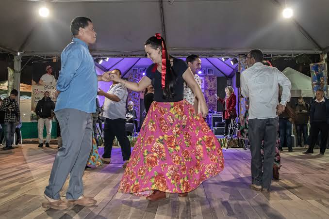
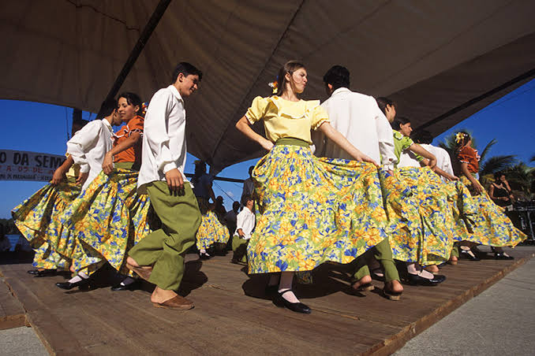
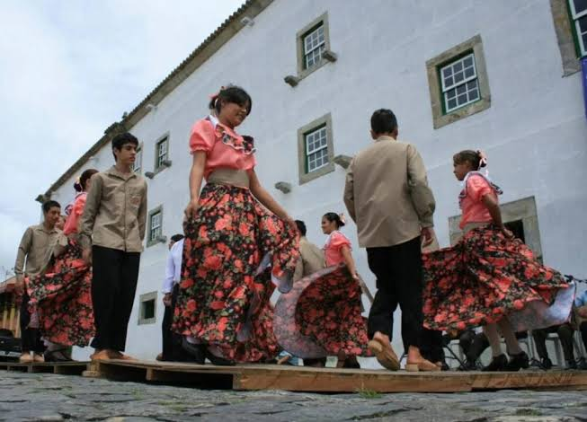

Sobre a tradicao
O Fandango Caiçara é uma das manifestações socioculturais mais ricas e emblemáticas do Brasil, típica das comunidades litorâneas que habitam a faixa coste ira entre o sul do estado de São Paulo (como Cananéia, Iguape e Ubatuba) e o norte do Paraná (com destaques para Paranaguá, Guaraqueçaba e a Ilha dos Valadares). Reconhecido em 2012 pelo Instituto do Patrimônio Histórico e Artístico Nacional (IPHAN) como Patrimônio Cultural Imaterial do Brasil, o fandango transcende a simples ideia de uma apresentação artística: trata-se de um complexo sistema de vida que articula música, dança, religiosidade, saberes artesanais e laços comunitários profundos.

Contexto Historico do Fandango Caicara
O Fandango Caicara e uma expressao cultural e artistica tradicional do litoral dos estados de Sao Paulo e Parana. Sua historia e marcada pelo sincretismo cultural, pela vida comunitaria e pela preservcao das tradicoes litoraneas.

Identidade, Tradicao e Comunitariedade
O Fandango Caicara e fundamental para a cultura brasileira por ser o simbolo maximo de identidade e uniao da comunidade caicara, preservando saberes ancestrais, como a danca do tamancado e a confeccao artesanal de instrumentos, e mantendo viva a memoria de solidariedade dos antigos mutiroes.

Curiosidades
Antigamente, o baile de fandango nao era um evento pago com dinheiro, mas sim a recompensa oferecida por um mutirao (chamado de puxirao ou pixirum)
Os homens usam tamancos de madeira pesada (feitos de arvores como laranjeira ou canela) para sapatear batendo os pes no chao.